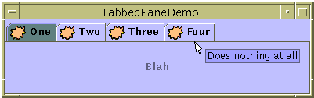

Feedback Form
|
|
Start of Tutorial > Start of Trail > Start of Lesson |
Search
Feedback Form |
With theJTabbedPaneclass, you can have several components (usually panels) share the same space. The user chooses which component to view by selecting the tab corresponding to the desired component. If you want similar functionality without the tab interface, you might want to use a card layout
instead of a tabbed pane.
To create a tabbed pane, you simply instantiate
JTabbedPane, create the components you wish it to display, and then add the components to the tabbed pane using theaddTabmethod.Here is a picture of an application that has a tabbed pane with four tabs:
 [PENDING: This figure will be updated. It now displays mnemonics, and the text in the tabs and panels is different.]
Try this:
- Run TabbedPaneDemo using JavaTM Web Start
- Put the cursor over a tab.
After a short time, you'll see the tool tip associated with the tab. As a convenience, you can specify tool tip text when you add a component to the tabbed pane.- Select a tab by clicking it.
The tabbed pane displays the component corresponding to the tab.- Select a tab by entering its mnemonic.
For example, in the Java look and feel you can select the tab labeled "Tab 3" by typing Alt-3.As the
TabbedPaneDemoexample shows, a tab can have a tool tip and a mnemonic, and it can display both text and an image. The example shows the tabs in their default position, at the top of the tabbed pane. You can change the tab position to be at the left, right, or bottom of the tabbed pane using thesetTabPlacementmethod.The following code from
TabbedPaneDemo.javacreates the tabbed pane in the previous example. Note that no event-handling code is necessary. The
JTabbedPaneobject takes care of mouse and keyboard events for you.As the previous code shows, theJTabbedPane tabbedPane = new JTabbedPane(); ImageIcon icon = createImageIcon("images/middle.gif"); JComponent panel1 = makeTextPanel("Panel #1"); tabbedPane.addTab("Tab 1", icon, panel1, "Does nothing"); tabbedPane.setMnemonicAt(0, KeyEvent.VK_1); JComponent panel2 = makeTextPanel("Panel #2"); tabbedPane.addTab("Tab 2", icon, panel2, "Does twice as much nothing"); tabbedPane.setMnemonicAt(1, KeyEvent.VK_2); JComponent panel3 = makeTextPanel("Panel #3"); tabbedPane.addTab("Tab 3", icon, panel3, "Still does nothing"); tabbedPane.setMnemonicAt(2, KeyEvent.VK_3); JComponent panel4 = makeTextPanel( "Panel #4 (has a preferred size of 410 x 50)."); panel4.setPreferredSize(new Dimension(410, 50)); tabbedPane.addTab("Tab 4", icon, panel4, "Does nothing at all"); tabbedPane.setMnemonicAt(3, KeyEvent.VK_4);addTabmethod handles the bulk of the work in setting up a tab in a tabbed pane. TheaddTabmethod has several forms, but they all take both a string title and the component to be displayed by the tab. Optionally, you can specify an icon and tool tip string. The text or icon (or both) can be null. Another way to create a tab is to use theinsertTabmethod, which lets you specify the index of the tab you're adding.The
setMnemonicAtmethod sets up a way for the user to switch to a specific tab using the keyboard. For example,setMnemonicAt(3, KeyEvent.VK_4)makes '4' the mnemonic for the fourth tab (which is at index 3, since the indices start with 0); pressing Alt-4 makes the fourth tab's component appear. Often, a mnemonic uses a character that's in the tab's title, and the character in the title is automatically underlined.
Version note: Support for mnemonics in tabbed panes was added in 1.4.When building components to add to a tabbed pane, keep in mind that no matter which child of a tabbed pane is visible, each child gets the same amount of space in which to display itself. The preferred size of the tabbed pane is just big enough to display its tallest child at its preferred height, and its widest child at its preferred width. Similarly, the minimum size of the tabbed pane depends on the biggest minimum width and height of all its children.
In TabbedPaneDemo, the fourth panel has a preferred width and height that are larger than those of the other panels. Thus, the preferred size of the tabbed pane is just big enough to display the fourth panel at its preferred size. Every panel gets exactly the same amount of space — 410 pixels wide and 50 high, assuming the tabbed pane is at its preferred size. If you don't understand how preferred size is used, please refer to How Layout Management Works
The following tables list the commonly usedJTabbedPaneconstructors and methods. The API for using tabbed panes falls into these categories:
- Creating and Setting Up a Tabbed Pane
- Inserting, Removing, Finding, and Selecting Tabs
- Changing Tab Appearance
Creating and Setting Up a Tabbed Pane Method or Constructor Purpose JTabbedPane()
JTabbedPane(int)
JTabbedPane(int, int)Create a tabbed pane. The first optional argument specifies where the tabs should appear. By default, the tabs appear at the top of the tabbed pane. You can specify these positions (defined in the SwingConstantsinterface, whichJTabbedPaneimplements):TOP,BOTTOM,LEFT,RIGHT. The second optional argument specifies the tab layout policy. You can specify one of these policies (defined inJTabbedPane):WRAP_TAB_LAYOUTorSCROLL_TAB_LAYOUTScrollable tabs were introduced in 1.4 and, although supported, are not recommended. For more information, please see the Java Look and Feel Design Guidelines.
addTab(String, Icon, Component, String)
addTab(String, Icon, Component)
addTab(String, Component)Add a new tab to the tabbed pane. The first argument specifies the text on the tab. The optional icon argument specifies the tab's icon. The component argument specifies the component that the tabbed pane should show when the tab is selected. The fourth argument, if present, specifies the tool tip text for the tab. void setTabLayoutPolicy(int)
int getTabLayoutPolicy()Set or get the policy that the tabbed pane uses in laying out the tabs when all the tabs do not fit within a single run. Possible values are WRAP_TAB_LAYOUTandSCROLL_TAB_LAYOUT. The default, and preferred, policy isWRAP_TAB_LAYOUT. Introduced in 1.4.void setTabPlacement(int)
int getTabPlacement()Set or get where the tabs appear, relative to the content. Possible values (defined in SwingConstants, which is implemented byJTabbedPane) areTOP,BOTTOM,LEFT, andRIGHT.
Inserting, Removing, Finding, and Selecting Tabs Method Purpose insertTab(String, Icon, Component, String, int)Insert a tab at the specified index, where the first tab is at index 0. The arguments are the same as for addTab.remove(Component)
removeTabAt(int)Remove the tab corresponding to the specified component or index. removeAll()Remove all tabs. int indexOfComponent(Component)
int indexOfTab(String)
int indexOfTab(Icon)Return the index of the tab that has the specified component, title, or icon. void setSelectedIndex(int)
void setSelectedComponent(Component)Select the tab that has the specified component or index. Selecting a tab has the effect of displaying its associated component. int getSelectedIndex()
Component getSelectedComponent()Return the index or component for the selected tab.
Changing Tab Appearance Method Purpose void setComponentAt(int, Component)
Component getComponentAt(int)Set or get which component is associated with the tab at the specified index. The first tab is at index 0. void setTitleAt(int, String)
String getTitleAt(int)Set or get the title of the tab at the specified index. void setIconAt(int, Icon)
Icon getIconAt(int)
void setDisabledIconAt(int, Icon)
Icon getDisabledIconAt(int)Set or get the icon displayed by the tab at the specified index. void setBackgroundAt(int, Color)
Color getBackgroundAt(int)
void setForegroundAt(int, Color)
Color getForegroundAt(int)Set or get the background or foreground color used by the tab at the specified index. By default, a tab uses the tabbed pane's background and foreground colors. For example, if the tabbed pane's foreground is black, then each tab's title is black except for any tabs for which you specify another color using setForegroundAt.void setEnabledAt(int, boolean)
boolean isEnabledAt(int)Set or get the enabled state of the tab at the specified index. void setMnemonicAt(int, int)
int getMnemonicAt(int)Set or get the keyboard mnemonic for accessing the specified tab. Introduced in 1.4. void setDisplayedMnemonicIndexAt(int, int)
int getDisplayedMnemonicIndexAt(int)Set or get a hint as to which character should be decorated to represent the mnemonic. This is useful when the mnemonic character appears multiple times in the tab's title and you don't want the first occurrence to be underlined. Introduced in 1.4. void setToolTipTextAt(int, String)
String getToolTipTextAt(int)Set or get the text displayed on tool tips for the specified tab. Introduced in 1.3.
This table lists examples that useJTabbedPaneand where those examples are described.
Example Where Described Notes TabbedPaneDemoThis page Demonstrates a few tabbed pane features, such as tool tips, icons, and mnemonics in tabs. BoxAlignmentDemoHow to Use BoxLayout Uses a JTabbedPaneas the only child of a frame's content pane.BorderDemoHow to Use Borders Uses its tabbed pane in a manner similar to BoxAlignmentDemo's usage. DialogDemoHow to Use Dialogs Has a tabbed pane in the center of a frame's content pane, with a label below it. DragFileDemoHow to Use Drag and Drop and Data Transfer Uses a tabbed pane at the bottom of the window to display the contents of one or more files. The tabbed pane isn't used until the user selects a file. The tabbed pane's state is controlled by an object of the custom type TabbedPaneController.
|
|
Start of Tutorial > Start of Trail > Start of Lesson |
Search
Feedback Form |
Copyright 1995-2004 Sun Microsystems, Inc. All rights reserved.